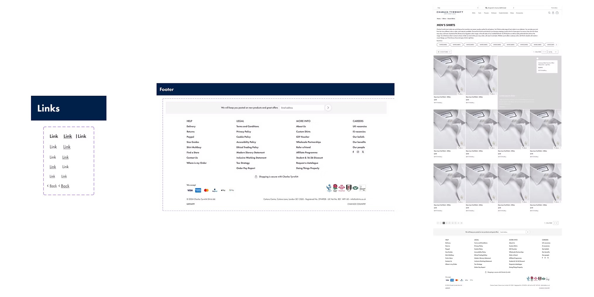
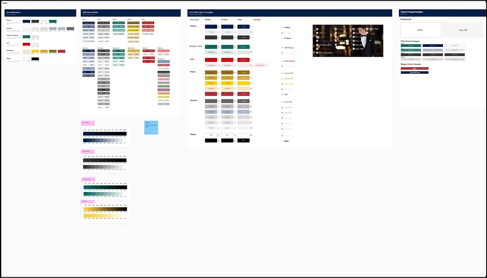
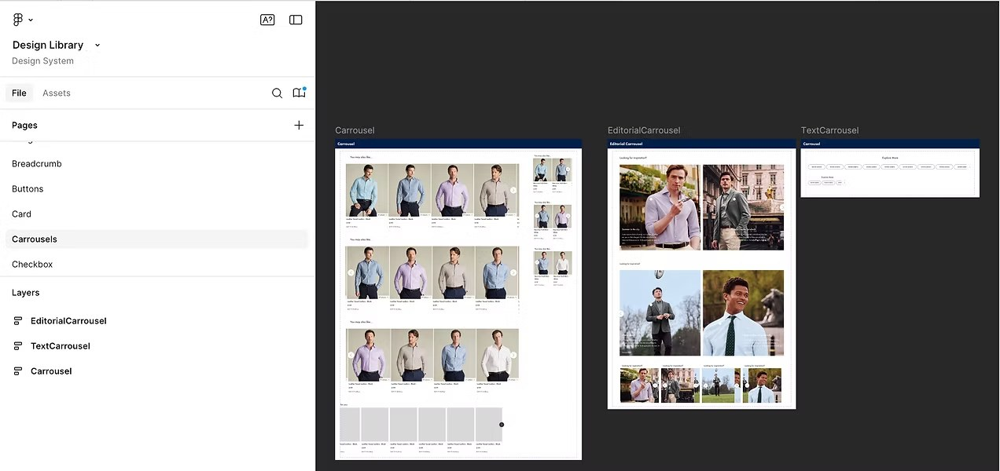
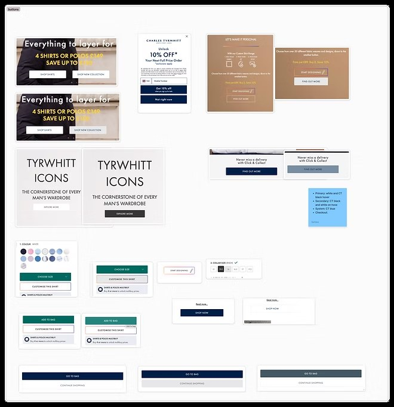
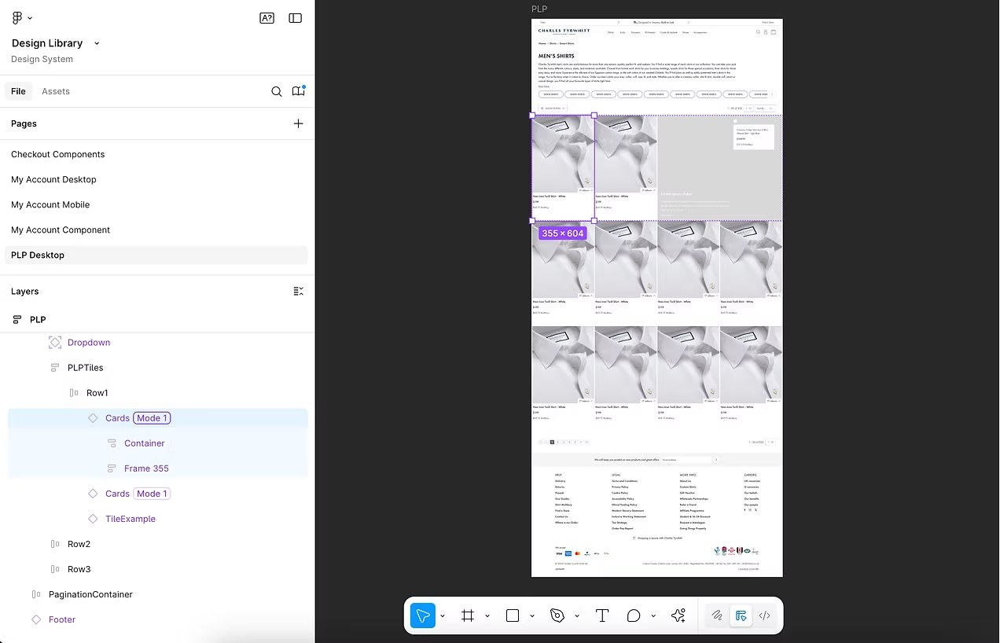

"This project taught me that scalable design isn't just about consistency — it's about empowering teams to build faster and more confidently."
A design system that turned consistency into velocity

"This project taught me that scalable design isn't just about consistency — it's about empowering teams to build faster and more confidently."
As testing velocity increased across CRO and product teams, we needed a better way to maintain quality and consistency.
I led the creation of Charles Tyrwhitt's first design system — a scalable Figma library paired with Notion documentation. The system made it faster for designers to build test variants, easier to stay consistent, and gave the wider team access to reusable, responsive components.

Colour tokens, typography scale, and usage examples — the foundations that every component in the system is built on.
I ran a series of audits and shadowing sessions:
These insights helped ensure the system wasn't just technically complete, but also personalised to how we actually worked.

The Figma foundations page — centralised tokens for colour, spacing, type, and border radius, with clear naming conventions for desktop and mobile.

Carousel components: standard, editorial, and text variants — all responsive and prototyped.

Buttons, badges, CTAs, and promotional components — all with light/dark mode variants.

PLP page template — drag-and-drop ready, with real components, proper spacing, and all interactive states pre-built.
The design system is now the backbone of all experimentation and design work at Charles Tyrwhitt. It sped up our workflow, reduced duplication, and helped unify design standards across teams — while remaining tailored to the way our designers actually work.
By including fully prototyped components, we also made usability testing faster and more realistic, allowing teams to validate ideas without extra overhead. What started as a library became a shared language — one that continues to support testing velocity, collaboration, and consistent UX at scale.